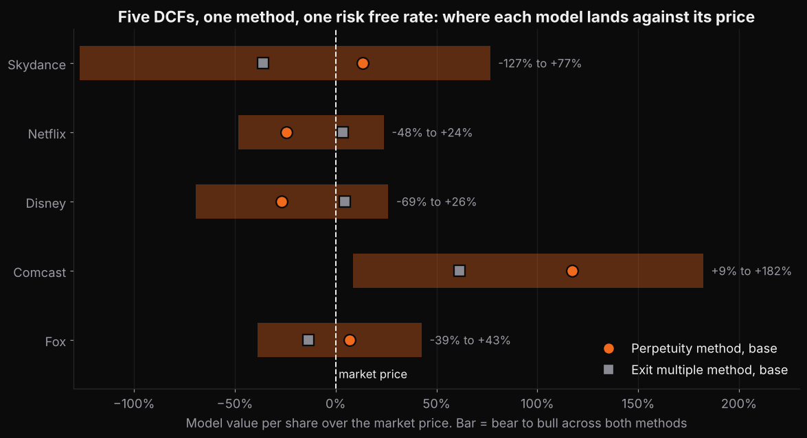
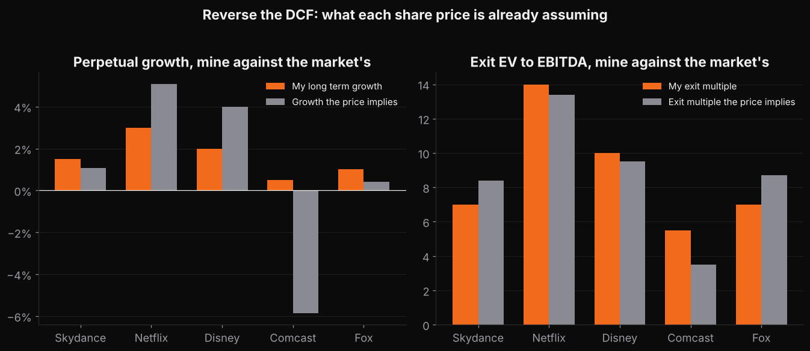
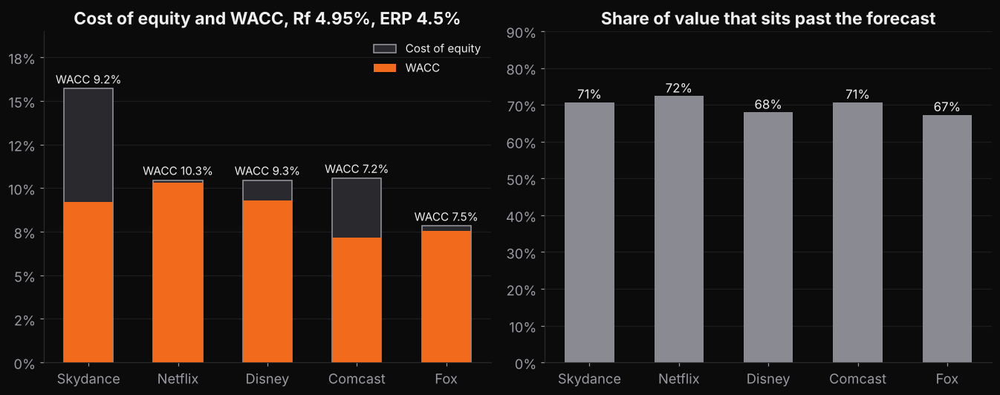

Project
Media five.
Skydance just became the fourth biggest media company in America. One DCF of it tells you a number. Five DCFs on the same template tell you whether the number makes sense.
Why five
The discount rate was the problem, so I built the comparison
The Skydance model lives or dies on a 9.2 percent cost of capital that I built from a relevered beta and an 8 percent cost of debt. The only way to know if that is reasonable is to run the same math on the companies it competes with. So I rebuilt the template as a generic one, kept every formula, and loaded Netflix, Disney, Comcast and Fox from their latest filings.
Each of the four is there for a reason. Netflix is the streaming business Skydance is chasing. Disney is the closest mix of studios, linear networks and streaming. Comcast owns the cable networks and studio that Warner Bros. Discovery used to sit next to, and is about to spin them off. Fox is what a pure linear network business looks like, with a Roku deal pending. Together they bracket every piece of Skydance.
The result
Four prices the models can explain and one they cannot
Companies on one template. Same sheets, same formulas, same 4.95 percent risk free rate and 4.5 percent equity premium. Only the company specific inputs change.
Formulas across the five workbooks, zero errors on recalculation. Every sensitivity cell is a closed form formula, not a pasted value.
Numbered sources, almost all SEC filings and company releases. Analyst inputs with no source are labelled where they sit.
Perpetual growth that Comcast's $22 share price implies at a 7.2 percent WACC. The other four prices imply growth between 0.4 and 5.1 percent.
| Company | WACC | Market EV to EBITDA | Perpetuity, base | Exit multiple, base | Market price | Growth the price implies | Exit multiple the price implies | Terminal share |
|---|---|---|---|---|---|---|---|---|
| Skydance | 9.2% | 10.1x | $8.80 | $4.97 | $7.77 | 1.1% | 8.4x | 71% |
| Netflix | 10.3% | 17.1x | $49.86 | $68.19 | $65.85 | 5.1% | 13.4x | 72% |
| Disney | 9.3% | 9.2x | $80.52 | $115.07 | $110.16 | 4.0% | 9.5x | 68% |
| Comcast | 7.2% | 4.5x | $47.91 | $35.60 | $22.04 | -5.9% | 3.5x | 71% |
| Fox | 7.6% | 7.9x | $73.00 | $59.00 | $68.27 | 0.4% | 8.7x | 67% |
Read the last three columns together. Reversing each DCF gives the long term growth rate and the exit multiple that the share price already assumes. Netflix, Disney and Fox are priced for growth of about 0 to 5 percent and multiples near where they trade. Skydance is priced for 1 percent growth, which is close to what I assumed. Comcast is priced as if its cash flow shrinks 6 percent a year forever, and no scenario I built is that bad.
These are model outputs under stated assumptions. Nothing on this page is a recommendation to buy or sell anything, and I am not claiming the market is wrong about Comcast. I am saying the price and the filings disagree, and the model shows how much.
Charts
The five on three pictures

Where each model lands against its priceDots are the base case on each method. Bars run from the bear case to the bull case across both methods. Only Comcast's whole range sits above its price. 
Reverse the DCFLeft, the growth rate I assumed against the one the price implies. Right, the exit multiple I assumed against the implied one. The pairs agree everywhere except Comcast. 
Cost of capital and terminal value shareSame risk free rate and equity premium in all five. The spread in WACC comes from beta and leverage. Two thirds or more of every valuation sits past the forecast, which is normal and worth saying out loud.


What is the same and what is not
The rules I held constant
- Same discount rate inputs. 10 year Treasury at 4.95 percent on October 22, 2026, a 4.5 percent equity risk premium, a 23 percent cash tax rate, market value weights and Hamada relevering of an unlevered beta.
- Same cash flow definition. Adjusted EBITDA less stock compensation, cash restructuring, cash taxes on profit after tax depreciation, capex and a working capital and content line. Stock compensation is a real cost in all five.
- Same mechanics. Mid year discounting, a stub for the first partial year, perpetuity and exit multiple methods side by side, and three scenarios on one switch.
- Different fiscal years. Disney ends in late September and Fox in June, so their forecasts run FY2027 to FY2032 and the stub fractions are 0.94 and 0.68. Netflix, Comcast and Skydance run calendar 2026 to 2031 with a 0.19 stub.
- Different pending deals. Comcast is valued before the NBCUniversal and Sky spin announced for mid 2027. Fox is valued without Roku, which closes in the first half of 2027. Skydance is valued after Warner Bros. Discovery, because that one closed. Each README says so.
- Netflix content. Content amortization stays inside EBITDA and the gap between cash content spend and amortization goes in the working capital line, which is how Netflix frames it. That makes its margin comparable to the others.
The company pages
One page per model
- Skydance. The original. Pro forma for Warner Bros. Discovery, $89 billion of gross debt, a synergy line that is all of the EBITDA growth.
- Netflix. A 10.3 percent WACC and 17 times EBITDA. The perpetuity method cannot get to the price. The exit method can.
- Disney. Three segments, a fiscal year that ends in September, and cruise ships that explain the capex.
- Comcast. The one the model cannot reconcile. 2.3 times leverage, a 7.2 percent WACC and a price that implies a shrinking business.
- Fox. Net cash, 23 percent margins, even year political advertising, and Roku left out on purpose.
What I got wrong first
Betas off a quote page are not inputs
My first pass took each company's quoted beta as the unlevered beta. Netflix came out at an 11.6 percent WACC and $42 a share. Comcast's 0.67 unlevered to 0.4 once I backed out its leverage, which would have given it a lower cost of equity than a utility. So I set the unlevered betas by hand, 0.6 for Fox, 0.7 for Comcast, 0.9 for Skydance, 1.05 for Disney and 1.2 for Netflix, wrote down why on each WACC sheet and let the leverage do the rest. That order, linear, cable, the levered merger, diversified, then streaming, is the order I would defend in an interview.